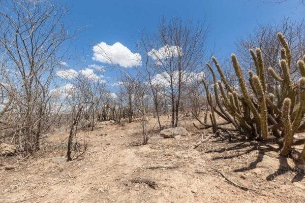

Problemas ambientais, econômicos e sociais do clima semiárido.
As secas, o calor intenso e a baixa qualidade dos solos que caracterizam as áreas de abrangência do clima semiárido são fatores que condicionam sérios problemas socioeconômicos, além de agravar aqueles já existentes e que são historicamente perpetuados.
A população que habita essas regiões apresenta grande limitação quanto ao desenvolvimento de cultivos agrícolas e à prática da pecuária, o que se deve pela escassez de chuvas, portanto, escassez de recursos hídricos, e pelas condições dos solos, causando problemas como a fome e a pobreza. Com poucas fontes de água potável e rios em sua maioria intermitentes, a sede aparece em muitas dessas áreas. O forte calor é ainda um agravante que reduz drasticamente a qualidade de vida nelas.
Entre as soluções encontradas pela população, estão as migrações sazonais e também o êxodo rural, de caráter mais definitivo, deslocando-se para áreas que ofereçam melhores condições climáticas e econômicas.
vegetação do semiárido
As plantas do clima semiárido têm características que dificultam a perda de água, como:
• Pequenas árvores e arbustos com poucas folhas, galhos tortuosos, cascas grossas e raízes profundas;
• Espinhos;
• Raízes superficiais;
• Mecanismos de armazenamento de água.
As plantas xerófilas também se adaptam ao clima semiárido, com raízes muito longas e extensas para captar água a grandes distâncias, caules carnudos para armazenar água e folhas pequenas, reduzidas a espinhos ou cobertas de pelos, para evitar perdas excessivas de água pela transpiração.
índice pluviométrico
O índice pluviométrico deste clima é entre 200 mm e 500 mm. Não é um índice excepcional, mas proporciona atividades agrícolas, mesmo com o "déficit" hídrico.

© Imagem do bioma Caatinga no interior nordestino.